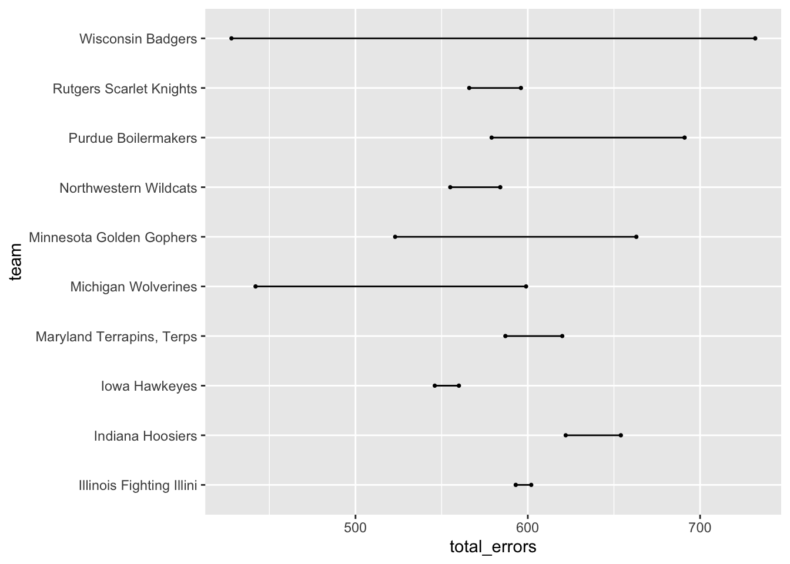
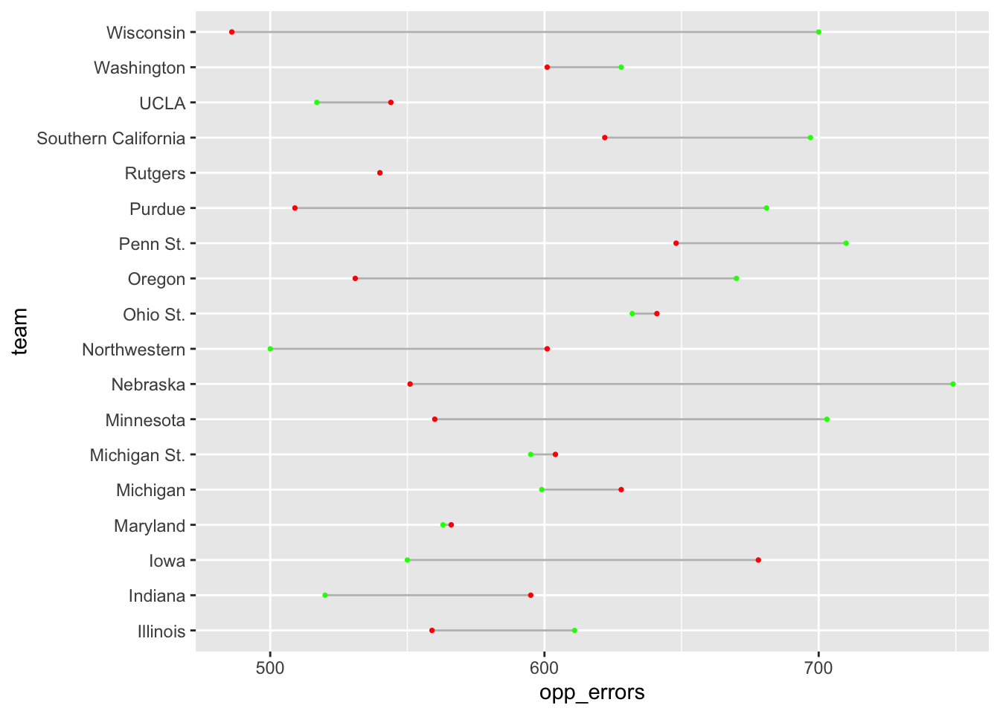
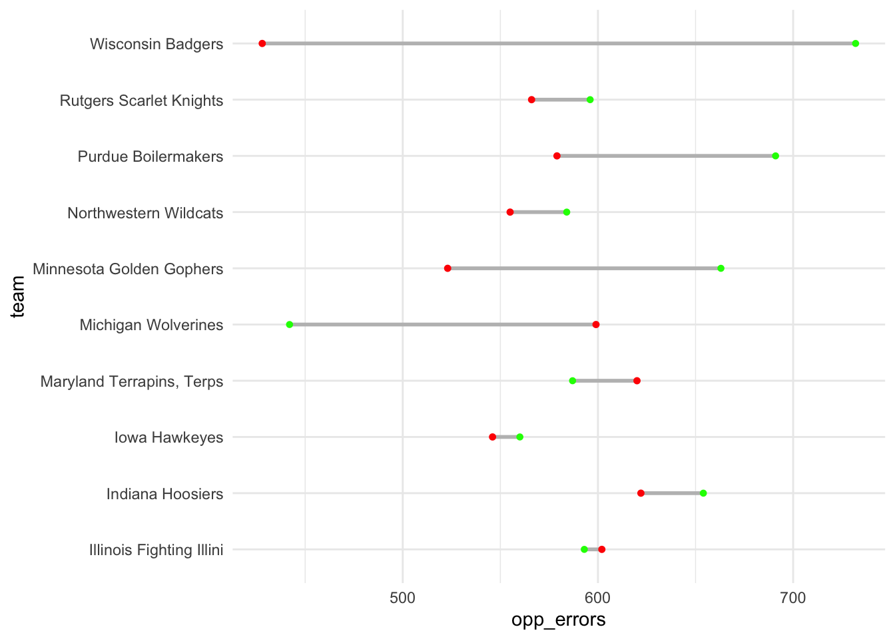
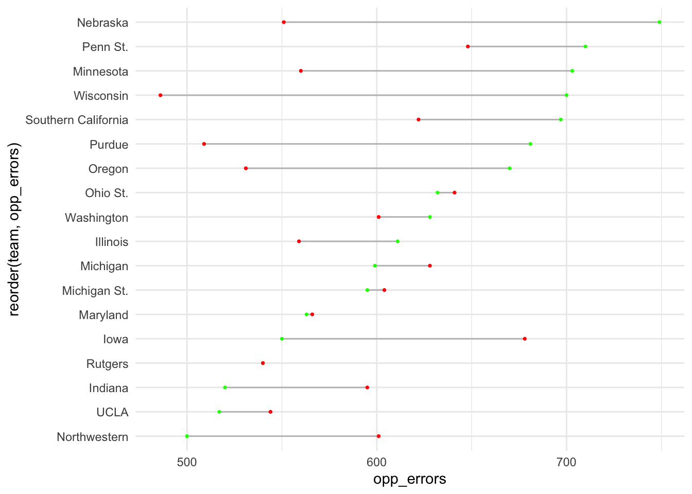
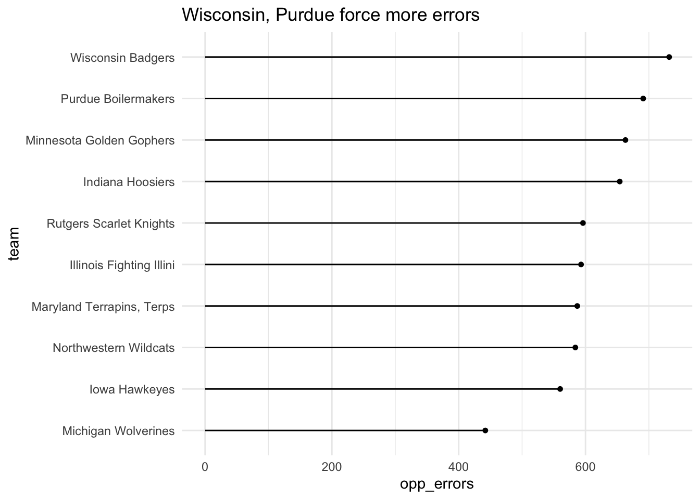
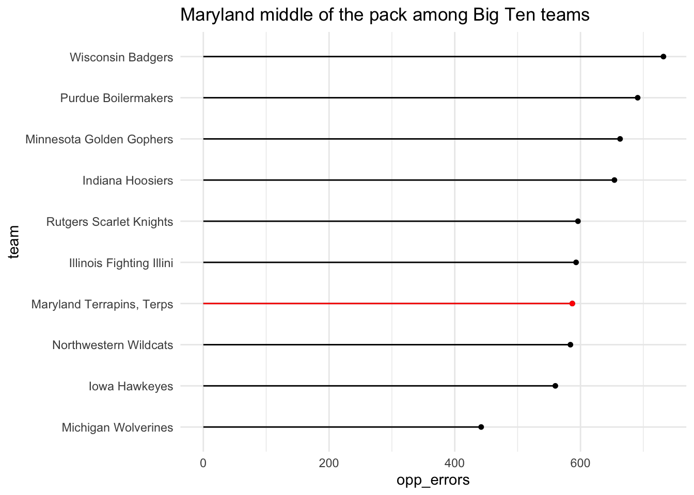

library(tidyverse)
library(ggalt)21 Dumbbell and lollipop charts
Second to my love of waffle charts because I’m always hungry, dumbbell charts are an excellently named way of showing the difference between two things on a number line – a start and a finish, for instance. Or the difference between two related things. Say, turnovers and assists.
Lollipop charts – another excellent name – are a variation on bar charts. They do a good job of showing magnitude and difference between things.
To use both of them, you need to add a new library:
install.packages("ggalt")
Let’s give it a whirl.
21.1 Dumbbell plots
For this, let’s use college volleyball game logs from this season.
For this walkthrough:
And load it.
logs <- read_csv("data/ncaa_womens_volleyball_matchstats_2022.csv")Rows: 5995 Columns: 36
── Column specification ────────────────────────────────────────────────────────
Delimiter: ","
chr (3): team, opponent, home_away
dbl (31): team_score, opponent_score, s, kills, errors, total_attacks, hit_...
lgl (1): result
date (1): date
ℹ Use `spec()` to retrieve the full column specification for this data.
ℹ Specify the column types or set `show_col_types = FALSE` to quiet this message.For the first example, let’s look at the difference between a team’s errors versus their opponents’ errors. To get this, we’re going to add up all errors and opponent errors for a team in a season and take a look at where they come out. To make this readable, I’m going to focus on the Big Ten.
big10 <- c("Nebraska Cornhuskers", "Iowa Hawkeyes", "Minnesota Golden Gophers", "Illinois Fighting Illini", "Northwestern Wildcats", "Wisconsin Badgers", "Indiana Hoosiers", "Purdue Boilermakers", "Ohio State Buckeyes", "Michigan Wolverines", "Michigan State Spartans", "Penn State Nittany Lions", "Rutgers Scarlet Knights", "Maryland Terrapins, Terps")
errors <- logs |>
filter(team %in% big10) |>
group_by(team) |>
summarise(
total_errors = sum(errors),
opp_errors = sum(defensive_errors))Now, the way that the geom_dumbbell works is pretty simple when viewed through what we’ve done before. There’s just some tweaks.
First: We start with the y axis. The reason is we want our dumbbells going left and right, so the label is going to be on the y axis.
Second: Our x is actually two things: x and xend. What you put in there will decide where on the line the dot appears.
ggplot() +
geom_dumbbell(
data=errors,
aes(y=team, x=total_errors, xend=opp_errors)
)Warning: Using the `size` aesthetic with geom_segment was deprecated in ggplot2 3.4.0.
ℹ Please use the `linewidth` aesthetic instead.
Well, that’s a chart alright, but what dot is the team errors and what are the opponent errors? To fix this, we’ll add colors.
So our choice of colors here is important. We want team errors to be seen as bad and opponent errors to be seen as good. So lets try red for team errors and green for opponent errors To make this work, we’ll need to do three things: first, use the English spelling of color, so colour. The, uh, colour is the bar between the dots, the x_colour is the color of the x value dot and the xend_colour is the color of the xend dot. So in our setup, defensive errors are x, they’re good, so they’re green.
ggplot() +
geom_dumbbell(
data=errors,
aes(y=team, x=opp_errors, xend=total_errors),
colour = "grey",
colour_x = "green",
colour_xend = "red")
Better. Let’s make two more tweaks. First, let’s make the whole thing bigger with a size element. And let’s add theme_minimal to clean out some cruft.
ggplot() +
geom_dumbbell(
data=errors,
aes(y=team, x=opp_errors, xend=total_errors),
size = 1,
color = "grey",
colour_x = "green",
colour_xend = "red") +
theme_minimal()
And now we have a chart that tells a story – got green on the right? That’s good. A long distance between green and red? Better. But what if we sort it by good errors?
ggplot() +
geom_dumbbell(
data=errors,
aes(y=reorder(team, opp_errors), x=opp_errors, xend=total_errors),
linewidth = 1,
color = "grey",
colour_x = "green",
colour_xend = "red") +
theme_minimal()Warning in geom_dumbbell(data = errors, aes(y = reorder(team, opp_errors), :
Ignoring unknown parameters: `linewidth`
Maryland’s opponents have committed a lot of errors - that’s good news for the Terps - but there’s a clear gap between Maryland and the top teams in the conference when it comes to committing errors.
21.2 Lollipop charts
Sticking with takeaways, lollipops are similar to bar charts in that they show magnitude. And like dumbbells, they are similar in that we start with a y – the traditional lollipop chart is on its side – and we only need one x. The only additional thing we need to add is that we need to tell it that it is a horizontal chart.
ggplot() +
geom_lollipop(
data=errors,
aes(y=team, x=opp_errors),
horizontal = TRUE
)
We can do better than this with a simple theme_minimal and some better labels.
ggplot() +
geom_lollipop(
data=errors,
aes(y=reorder(team, opp_errors), x=opp_errors),
horizontal = TRUE
) + theme_minimal() +
labs(title = "Maryland, Rutgers force more errors", y="team")
How about some layering?
md <- errors |> filter(team == "Maryland Terrapins, Terps")ggplot() +
geom_lollipop(
data=errors,
aes(y=reorder(team, opp_errors), x=opp_errors),
horizontal = TRUE
) +
geom_lollipop(
data=md,
aes(y=team, x=opp_errors),
horizontal = TRUE,
color = "red"
) +
theme_minimal() +
labs(title = "Maryland forced the most errors among Big Ten teams", y="team")
The headline says it all.